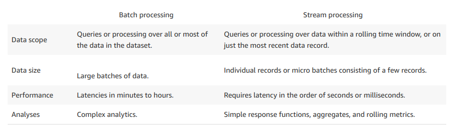
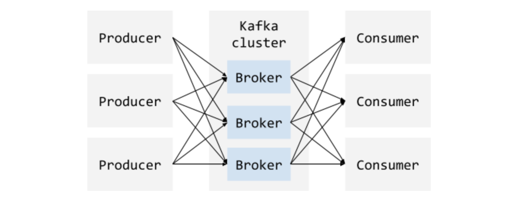
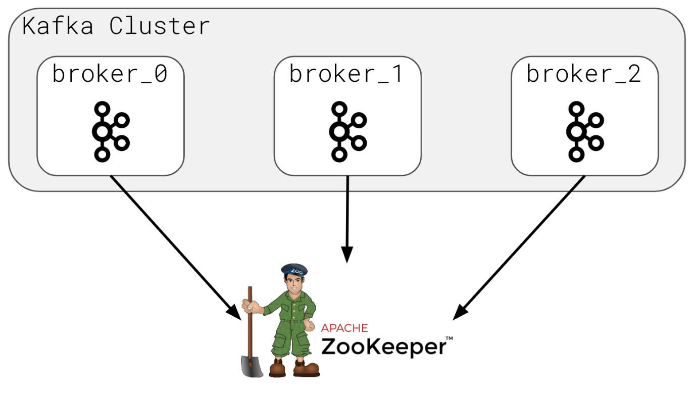
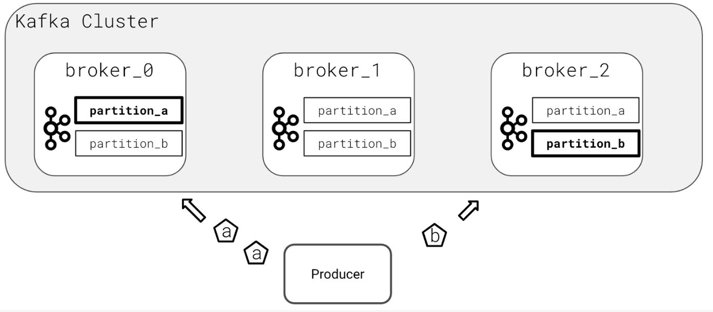
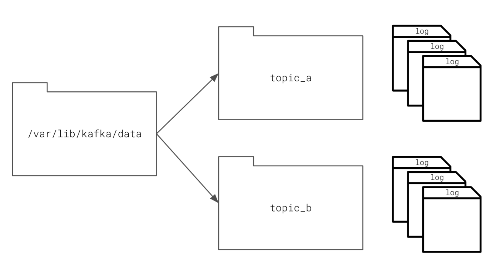
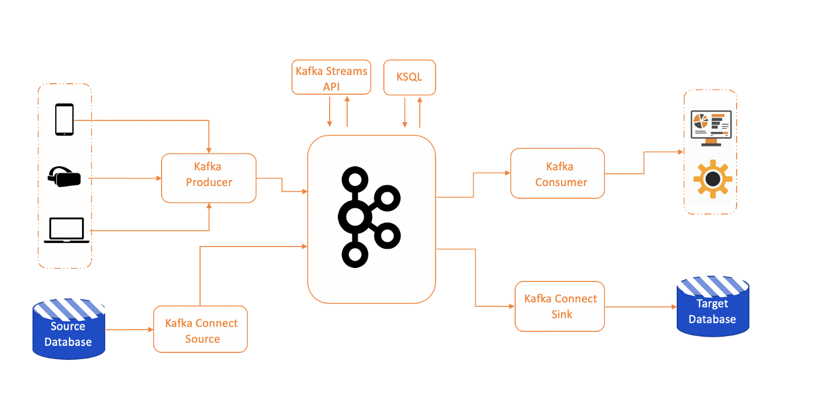

Data Streaming
What/Why?
Apache Kafka
What
Zookeeper
* Manages kafka cluster
* zookeeper lets the broker to join and leave gracefully
Data Partitioning
* Partition breeds parallelism
* Kafka hashes each message and pushes message into appropriate parition so that producer and consumer can behave asynchronously
Data Storage
* Kafka stores data inside appropriate topics which in turn is just a file with logs, Kafka focusses on append only logs
Scenario: How do you handle type of data and its persistence ?
Scenario: Sending data schema along with data is slowing down my application
Schema Registry

* Confluent lets you define schema on schema registry which is a HTTP endpoint which communicates to downstream application when there is a change in schema
Confluent Kafka Ecosystem
* Kafka Connect : Connects with JDBC or ODBC origins
* KSQL : Performs SQL operations on Kafka Topics
Faust is a stream processing library, porting the ideas from Kafka Streams to Python.